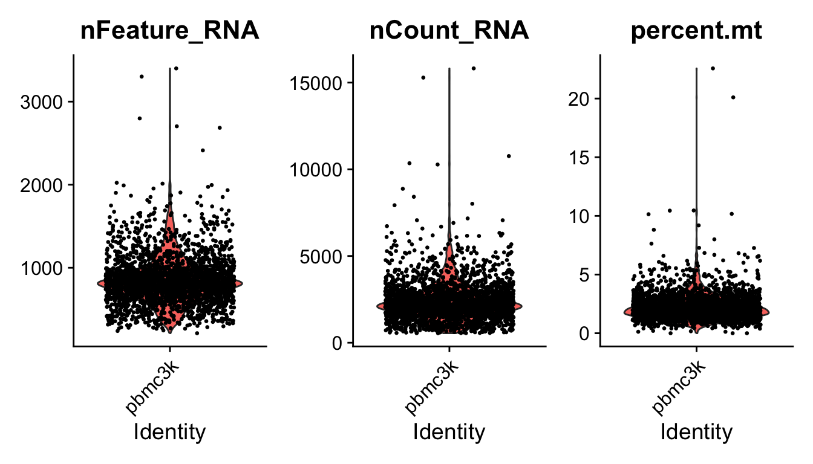
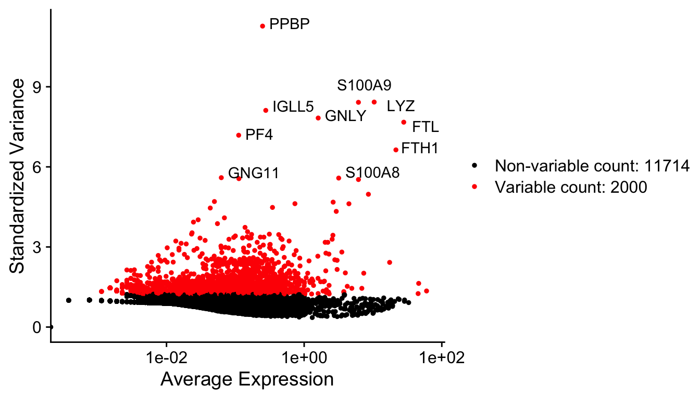
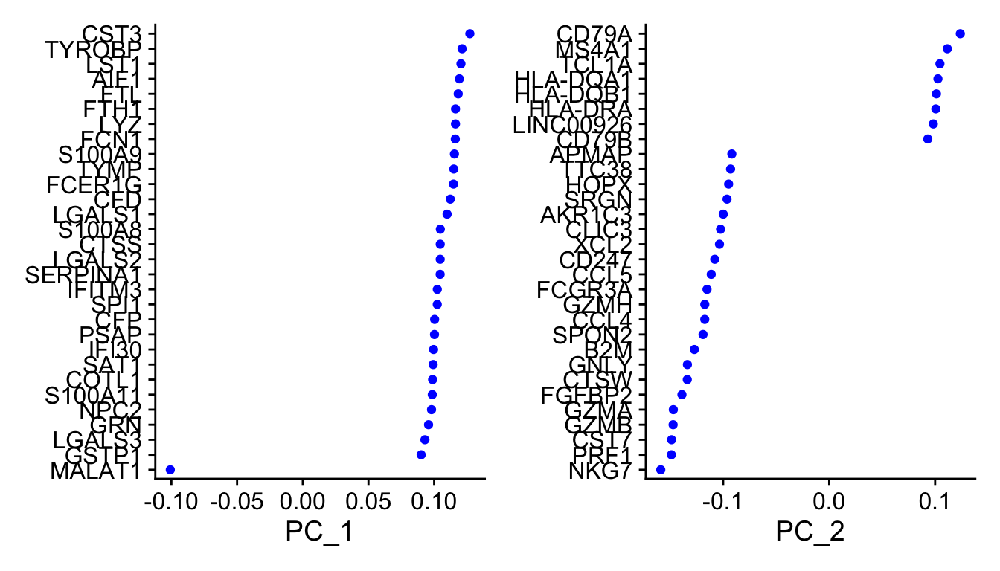
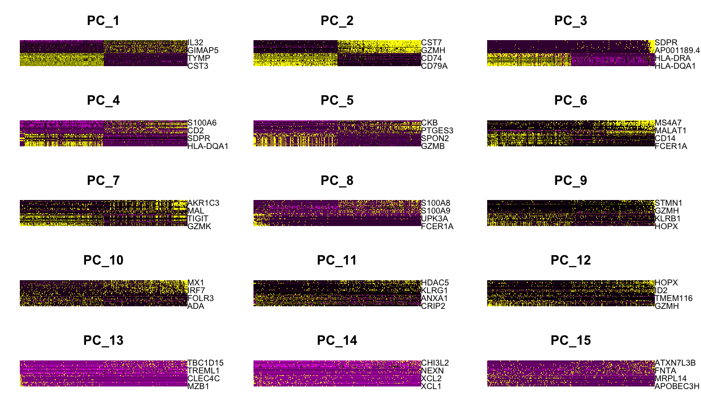
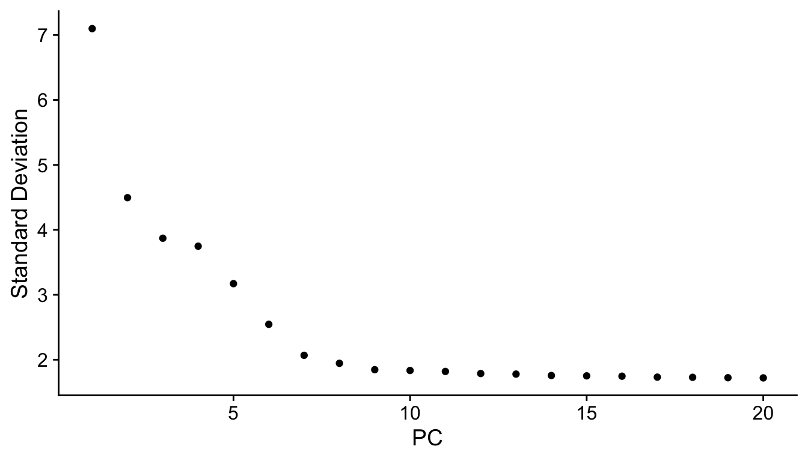
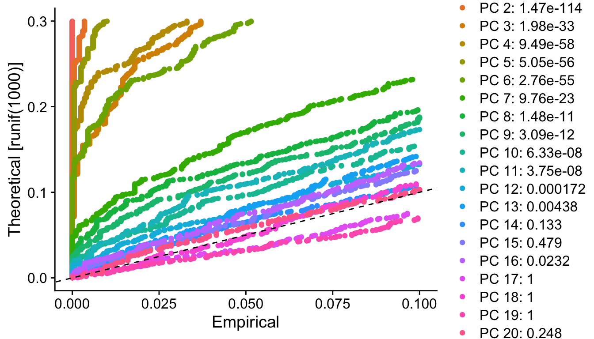
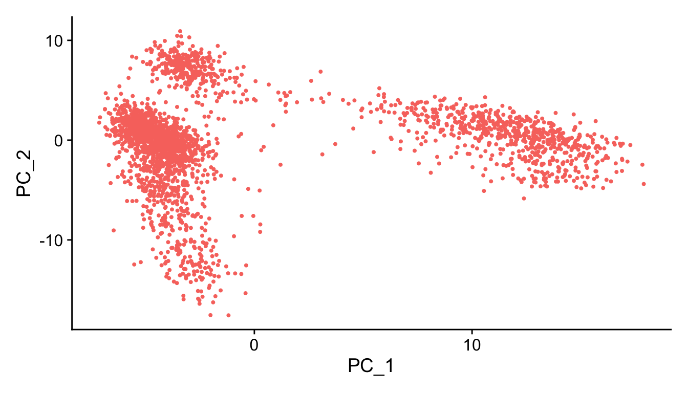
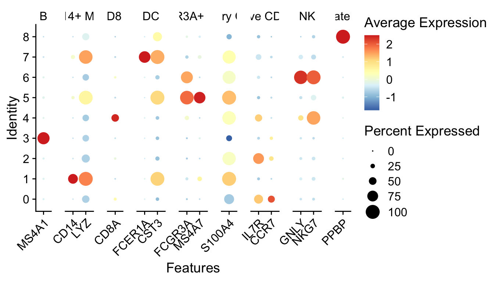
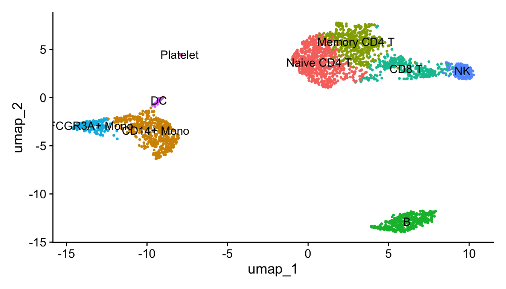

第 1 章 Seurat 教程
1.1 数据和R包准备
代码：https://satijalab.org/seurat/articles/pbmc3k_tutorial
数据：https://cf.10xgenomics.com/samples/cell/pbmc3k/pbmc3k_filtered_gene_bc_matrices.tar.gz
1.2 读取数据
10X的输入数据是固定的三个文件，在工作目录下新建01_data/，把三个文件放进去。
pbmc.data <- Read10X(data.dir = "01_data/")
dim(pbmc.data)
## [1] 32738 2700
pbmc.data[c("CD3D", "TCL1A", "MS4A1"), 1:30]
## 3 x 30 sparse Matrix of class "dgCMatrix"
##
## CD3D 4 . 10 . . 1 2 3 1 . . 2 7 1 . . 1 3 . 2 3 . . . . . 3 4 1 5
## TCL1A . . . . . . . . 1 . . . . . . . . . . . . 1 . . . . . . . .
## MS4A1 . 6 . . . . . . 1 1 1 . . . . . . . . . 36 1 2 . . 2 . . . .
range(pbmc.data)
## [1] 0 419
pbmc <- CreateSeuratObject(counts = pbmc.data,
project = "pbmc3k",
min.cells = 3,
min.features = 200)
pbmc
## An object of class Seurat
## 13714 features across 2700 samples within 1 assay
## Active assay: RNA (13714 features, 0 variable features)
## 1 layer present: counts一个基因至少要在3个细胞里面有表达，才被保留； 一个细胞里面至少要表达两百个基因，才被保留。
1.3 质控
这里是对细胞进行的质控，指标是：
线粒体基因含量不能过高；
nFeature_RNA 不能过高或过低
为什么？ nFeature_RNA是每个细胞中检测到的基因数量。nCount_RNA是细胞内检测到的分子总数。nFeature_RNA过低，表示该细胞可能已死/将死或是空液滴。太高的nCount_RNA和/或nFeature_RNA表明“细胞”实际上可以是两个或多个细胞。结合线粒体基因count数除去异常值，即可除去大多数双峰/死细胞/空液滴，因此它们过滤是常见的预处理步骤。 参考自：https://www.biostars.org/p/407036/
1.3.1 查看三个指标
head(pbmc@meta.data)
## orig.ident nCount_RNA nFeature_RNA
## AAACATACAACCAC-1 pbmc3k 2419 779
## AAACATTGAGCTAC-1 pbmc3k 4903 1352
## AAACATTGATCAGC-1 pbmc3k 3147 1129
## AAACCGTGCTTCCG-1 pbmc3k 2639 960
## AAACCGTGTATGCG-1 pbmc3k 980 521
## AAACGCACTGGTAC-1 pbmc3k 2163 781
pbmc[["percent.mt"]] <- PercentageFeatureSet(pbmc, pattern = "^MT-")
head(pbmc@meta.data)
## orig.ident nCount_RNA nFeature_RNA percent.mt
## AAACATACAACCAC-1 pbmc3k 2419 779 3.0177759
## AAACATTGAGCTAC-1 pbmc3k 4903 1352 3.7935958
## AAACATTGATCAGC-1 pbmc3k 3147 1129 0.8897363
## AAACCGTGCTTCCG-1 pbmc3k 2639 960 1.7430845
## AAACCGTGTATGCG-1 pbmc3k 980 521 1.2244898
## AAACGCACTGGTAC-1 pbmc3k 2163 781 1.6643551
VlnPlot(pbmc,
features = c("nFeature_RNA",
"nCount_RNA",
"percent.mt"),
ncol = 3,pt.size = 0.5)
根据这个三个图，确定了这个数据的过滤标准：
nFeature_RNA在200~2500之间；线粒体基因占比在5%以下。
1.4 找高变基因 (HVG)
pbmc <- NormalizeData(pbmc)
pbmc <- FindVariableFeatures(pbmc)
top10 <- head(VariableFeatures(pbmc), 10);top10
## [1] "PPBP" "LYZ" "S100A9" "IGLL5" "GNLY" "FTL" "PF4" "FTH1"
## [9] "GNG11" "S100A8"这里选了2000个，把前十个在图上标记出来。
plot1 <- VariableFeaturePlot(pbmc)
plot2 <- LabelPoints(plot = plot1,
points = top10,
repel = TRUE)
plot2
1.5 标准化和降维
1.5.1 线性降维PCA
pbmc <- ScaleData(pbmc, features = rownames(pbmc))
pbmc <- RunPCA(pbmc, features = VariableFeatures(pbmc))
VizDimLoadings(pbmc, dims = 1:2, reduction = "pca")


# 限速步骤
f = "jc.Rdata"
if(!file.exists(f)){
pbmc <- JackStraw(pbmc, num.replicate = 100)
pbmc <- ScoreJackStraw(pbmc, dims = 1:20)
save(pbmc,file = f)
}
load(f)
JackStrawPlot(pbmc, dims = 1:20)


# 结合JackStrawPlot和ElbowPlot，挑选10个PC，所以这里dims定义为1:10
pbmc <- FindNeighbors(pbmc, dims = 1:10)
pbmc <- FindClusters(pbmc, resolution = 0.5) #分辨率
## Modularity Optimizer version 1.3.0 by Ludo Waltman and Nees Jan van Eck
##
## Number of nodes: 2638
## Number of edges: 95927
##
## Running Louvain algorithm...
## Maximum modularity in 10 random starts: 0.8728
## Number of communities: 9
## Elapsed time: 0 seconds
# 结果聚成几类，用Idents查看
length(levels(Idents(pbmc)))
## [1] 91.6 找 marker 基因
啥叫marker基因呢。和差异基因里面的上调基因有点类似，某个基因在某一簇细胞里表达量都很高，在其他簇表达量很低，那么这个基因就是这簇细胞的象征。
找全部cluster的maker基因
pbmc.markers <- FindAllMarkers(pbmc,
only.pos = TRUE,
min.pct = 0.25)
pbmc.markers %>% group_by(cluster) %>% top_n(n = 2, wt = avg_log2FC)
## # A tibble: 18 × 7
## # Groups: cluster [9]
## p_val avg_log2FC pct.1 pct.2 p_val_adj cluster gene
## <dbl> <dbl> <dbl> <dbl> <dbl> <fct> <chr>
## 1 9.57e- 88 2.40 0.447 0.108 1.31e- 83 0 CCR7
## 2 1.35e- 51 2.14 0.342 0.103 1.86e- 47 0 LEF1
## 3 7.07e-139 7.28 0.299 0.004 9.70e-135 1 FOLR3
## 4 3.38e-121 6.74 0.277 0.006 4.64e-117 1 S100A12
## 5 2.97e- 58 2.09 0.42 0.111 4.07e- 54 2 AQP3
## 6 5.03e- 34 1.87 0.263 0.07 6.90e- 30 2 CD40LG
## 7 2.40e-272 7.38 0.564 0.009 3.29e-268 3 LINC00926
## 8 2.75e-237 7.14 0.488 0.007 3.76e-233 3 VPREB3
## 9 7.25e-165 4.41 0.577 0.055 9.95e-161 4 GZMK
## 10 3.27e- 88 3.74 0.419 0.061 4.48e- 84 4 GZMH
## 11 1.69e-212 5.43 0.506 0.01 2.32e-208 5 CDKN1C
## 12 8.23e-168 5.88 0.37 0.005 1.13e-163 5 CKB
## 13 8.10e-179 6.22 0.471 0.013 1.11e-174 6 AKR1C3
## 14 5.38e-112 6.07 0.29 0.007 7.38e-108 6 SH2D1B
## 15 1.48e-220 7.63 0.812 0.011 2.03e-216 7 FCER1A
## 16 1.46e-207 8.03 0.5 0.002 2.00e-203 7 SERPINF1
## 17 0 14.4 0.615 0 0 8 LY6G6F
## 18 7.32e-222 13.9 0.385 0 1.00e-217 8 RP11-879F14.21.7 根据marker基因确定细胞
a = read.delim("../supp/markers.txt", header = F)
gt = split(a[,2],a[,1]) # unstack(a[,c(2,1)])
DotPlot(pbmc, features = gt,cols = "RdYlBu") +
RotatedAxis()
new.cluster.ids <- c("Naive CD4 T",
"CD14+ Mono",
"Memory CD4 T",
"B",
"CD8 T",
"FCGR3A+ Mono",
"NK",
"DC",
"Platelet")
names(new.cluster.ids) <- levels(pbmc)
seu.obj <- RenameIdents(pbmc, new.cluster.ids)
p1 <- DimPlot(seu.obj,
reduction = "umap",
label = TRUE,
pt.size = 0.5) + NoLegend()
p1